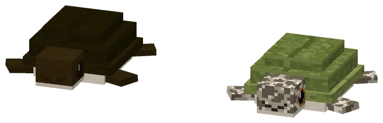
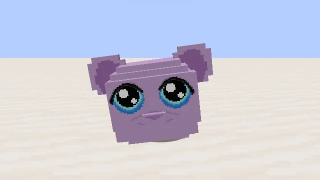
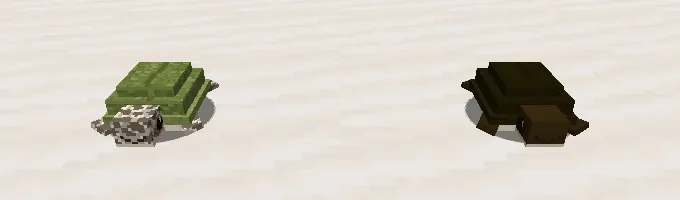

Two turtles: Poepschilly and SchillyTwee schildpadden: Poepschilly en Schilly
Careful: these are two different turtles. They look a lot alike (same shape, same size, both from the guhzee coast), but they are slightly different: Poepschilly is the dark brown one, and he is the kontpoetser. Schilly is the green one with the spotted head and flippers: a minihoofdje who never cleans anything, but who is the guhs' bestie. The Guhdex has a page for each of them.
Let op: dit zijn twee verschillende schildpadden. Ze lijken veel op elkaar (dezelfde vorm, even groot, allebei van de guhzee-kust), maar ze verschillen net een beetje: Poepschilly is de donkerbruine, en hij is de kontpoetser. Schilly is de groene met het gespikkelde koppie en de gespikkelde flippers: een minihoofdje dat nooit iets poetst, maar wel de bestie van de guhs is. De Guhdex heeft voor elk een eigen pagina.

Spot the differenceZoek de verschillen
Dark brown = Poepschilly. Green and spotted = Schilly. Both live along the coasts of the guhzeeen (in the water and on the beach next to land; you meet Poepschilly about twice as often), swim well and walk on land. Tame either one with kelp, dried kelp, seagrass or a kaasknabbel; a tamed turtle follows you, on land and under water.
Donkerbruin = Poepschilly. Groen en gespikkeld = Schilly. Allebei wonen ze langs de kust van de guhzeeën (in het water en op het strandje naast land; Poepschilly kom je ongeveer twee keer zo vaak tegen), ze zwemmen goed en lopen op het land. Tem ze met kelp, gedroogde kelp, zeegras of een kaasknabbel; een tamme schildpad volgt je, op het land en onder water.
Poepschilly, the kontpoetserPoepschilly, de kontpoetser
Poepschilly has a very special job: he crawls into a guh and cleans its bum from the inside. Right-click your tamed Poepschilly ("Poepschilly is er klaar voor!"), then one of your own tamed guhs. Poepschilly crawls in, the guh wiggles and blows bubbles (it tickles terribly: guh guh guh!), and after five seconds Poepschilly pops out again: plop! The guh is now Fris van binnen: 25% faster and sparkling, for three minutes. After that Poepschilly rests for five minutes. Keurig, hoor!
Poepschilly heeft een heel bijzonder beroep: hij kruipt in een guh en poetst zijn billen van binnenuit schoon. Rechtsklik je tamme Poepschilly ("Poepschilly is er klaar voor!") en dan een van je eigen tamme guhs. Poepschilly kruipt erin, de guh wiebelt en blaast belletjes (het kriebelt verschrikkelijk: guh guh guh!), en na vijf seconden floept Poepschilly er weer uit: plop! De guh is nu Fris van binnen: 25% sneller en sprankelend, drie minuten lang. Daarna rust Poepschilly vijf minuten uit. Keurig, hoor!
- Effect
- Fris van binnen
- DurationDuur
- 3 min, +25% speedsnelheid
- RestRust
- 5 min

The wiggleHet gewiebel
During a poetsbeurt the guh wiggles and bubbles. Nothing to worry about. It is very clean afterwards.
Tijdens een poetsbeurt wiebelt en bubbelt de guh. Niks aan de hand. Daarna is hij heel schoon.

In the gameIn het spel
Schilly (left, green) and Poepschilly (right, brown). Almost the same... but not quite.
Schilly (links, groen) en Poepschilly (rechts, bruin). Bijna hetzelfde... maar net niet.
Where it spawnsWaar hij spawnt
| BiomesBiomen | GroupGroep | WeightGewicht | Group sizeGroepsgrootte |
|---|---|---|---|
| Guhzee, Diepe Guhzee | extra spawn | 6 | 1–2 |